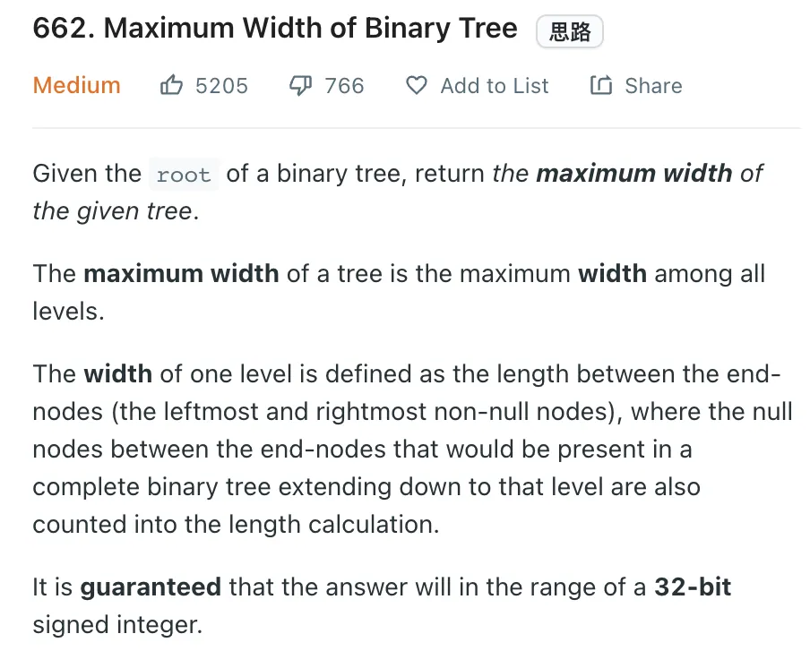
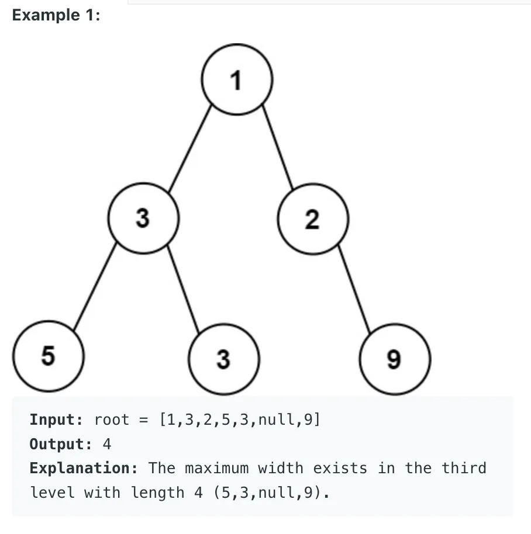
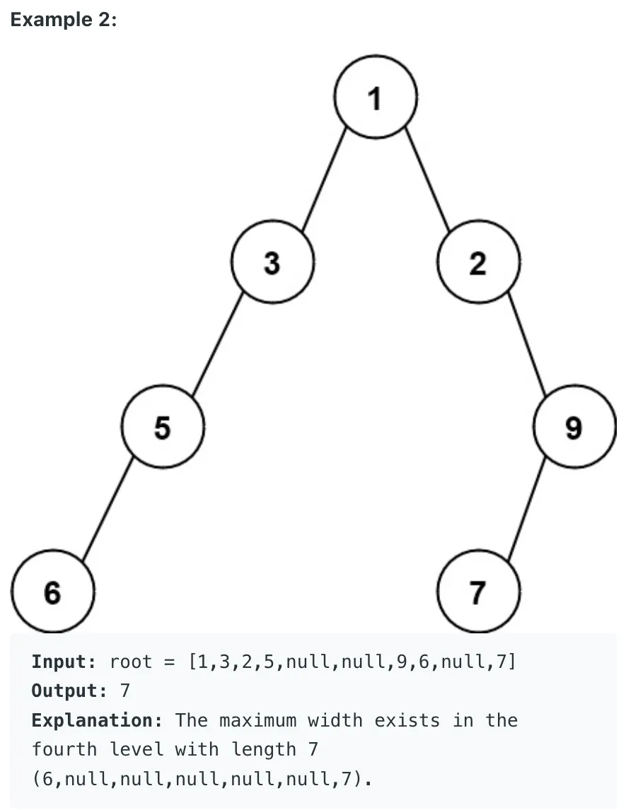
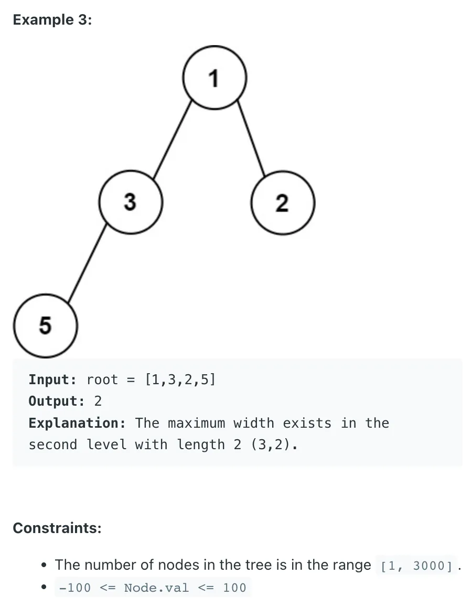
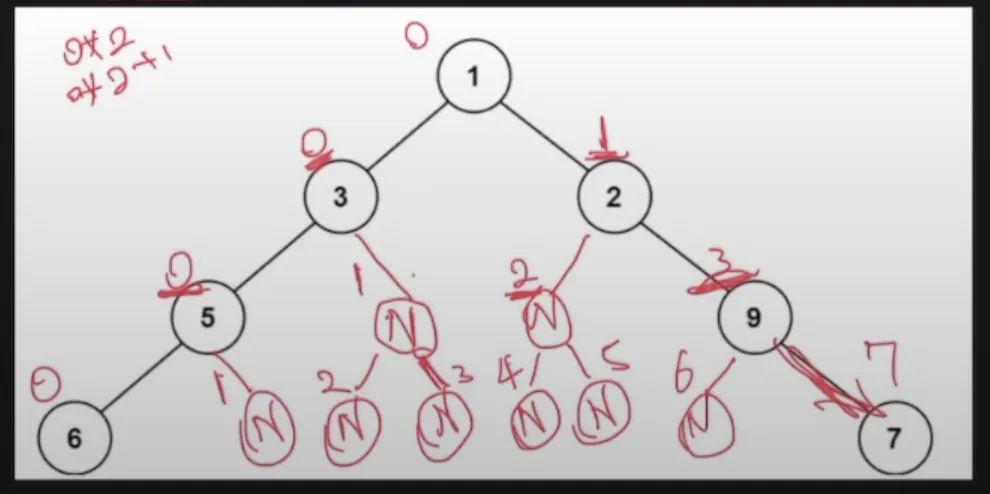
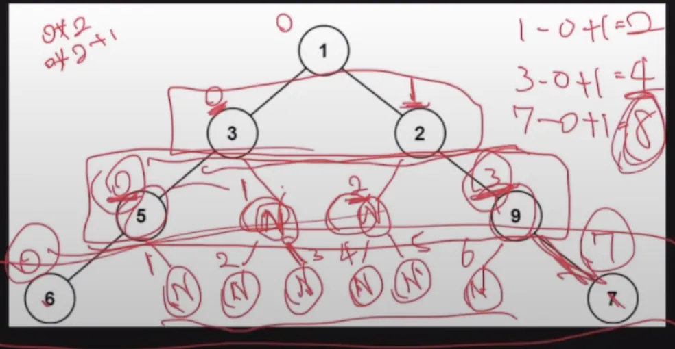

662. Maximum Width of Binary Tree
考過的公司：Asked by: tiktok
Question




✍🏽 My Solution
Solution #1 [BFS - level order 紀錄編號]
Runtime: 1 ms, faster than 100.00% of Java online submissions for Maximum Width of Binary Tree. Memory Usage: 42.2 MB, less than 85.63% of Java online submissions for Maximum Width of Binary Tree.
class Solution {
class Pair {
int id;
TreeNode node;
public Pair(TreeNode node, int id) {
this.id = id;
this.node = node;
}
}
public int widthOfBinaryTree(TreeNode root) {
if (root == null) return 0;
int maxwidth = 0;
Queue<Pair> queue = new LinkedList<>();
queue.offer(new Pair(root, 0));
while (!queue.isEmpty()) {
int sz = queue.size();
int start = 0, end = 0;
for (int i = 0; i < sz; i++) {
Pair cur = queue.poll();
TreeNode curNode = cur.node;
int curId = cur.id;
if (i == 0) {
start = curId;
}
if (i == sz - 1) {
end = curId;
}
// 左右子节点入队，同时记录对应节点的编号
if (curNode.left != null) {
queue.offer(new Pair(curNode.left, curId * 2));
}
if (curNode.right != null) {
queue.offer(new Pair(curNode.right, curId * 2 + 1));
}
}
maxwidth = Math.max(maxwidth, end - start + 1);
}
return maxwidth;
}
}
Explanation (in my words)
-
How does their solution work?
- 利用BFS去遍歷，每次把queue裡面的最左跟最右找出來，算出他的width也就是兩點的距離
-
怎麼算出binary tree左下右下的idx?
- 左邊 = 目前的 binary tree id * 2
- 右邊 = 目前的 binary tree id * 2 + 1（左邊是id2，右邊的下一個點就是id2+1）

-
算出兩點的距離，用max去比較找出最大寬度 兩點的距離 =
R - L + 1
-
思路講得超清楚：Maximum Width of Binary Tree | 面試刷題 | Leetcode 662 | Python
- What is the space/time complexity of their solution?
- time:
O(n)，其中n是節點數，因為我們使用 bfs 遍歷我們的樹。 - space:
O(w)，在哪裡w是最大節點數，因為我們需要保持我們的隊列。可能等於O(n)。
Solution #2 [DFS]
Runtime: 4 ms, faster than 27.85% of Java online submissions for Maximum Width of Binary Tree. Memory Usage: 43.8 MB, less than 45.53% of Java online submissions for Maximum Width of Binary Tree.
class Solution {
List<Integer> leftList = new ArrayList<>();
int maxwidth = 0;
public int widthOfBinaryTree(TreeNode root) {
dfs(root, 0, 0);
return maxwidth;
}
private void dfs(TreeNode root, int depth, int id) {
if (root == null) return;
if (leftList.size() == depth) {
leftList.add(id);
}
maxwidth = Math.max(maxwidth, id - leftList.get(depth) + 1);
dfs(root.left, depth + 1, 2*id);
dfs(root.right, depth + 1, 2*id + 1);
}
}
Explanation (in my words)
- How does their solution work?
- 利用完全二叉树的性质，用List存储每一层最左边的节点序号 然后不断用右边的序号来更新最大宽度
- What is the space/time complexity of their solution?
- time: O(n)
- space: O(h) ，其中
h是樹的高度。